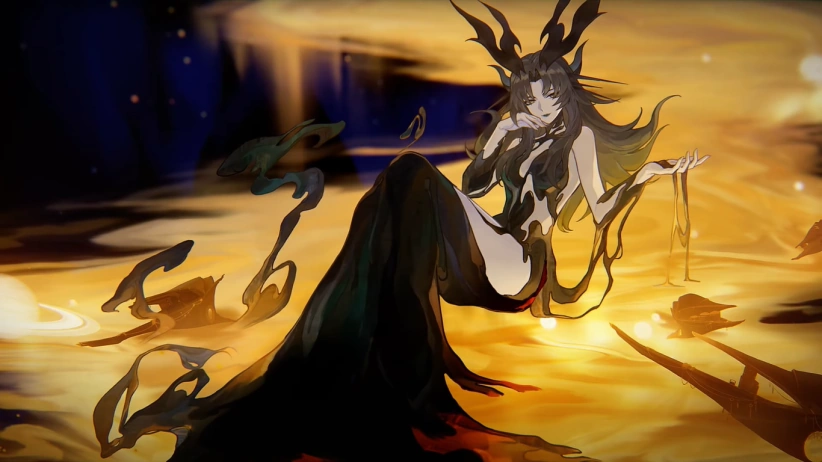

Phantylia pertenece a una clase de heliobi particularmente poderoso que tienen un sentido especialmente fuerte de autoconciencia. Tales heliobi se componen de varios heliobi que han resuelto sus diferencias y se han fusionado en un todo indisoluble. Los heliobi más débiles temen a tales seres, ya que acercarse demasiado a ellos hará que sean absorbidos por el heliobús más poderoso y pierdan permanentemente su sentido de sí mismos, esencialmente lo que lleva a su muerte. Phantylia ha robado muchos cuerpos en un intento de obtener un cuerpo indestructible, pero sabe que es imposible. Ella se describe a sí misma como una llama de El Impecible, y que si el combustible alguna vez se agota, el fuego también se extinguirá. Ella encuentra placer en causar la autodestrucción de los mortales, y favorece causar la destrucción a través del colapso interno en lugar de ataques directos.